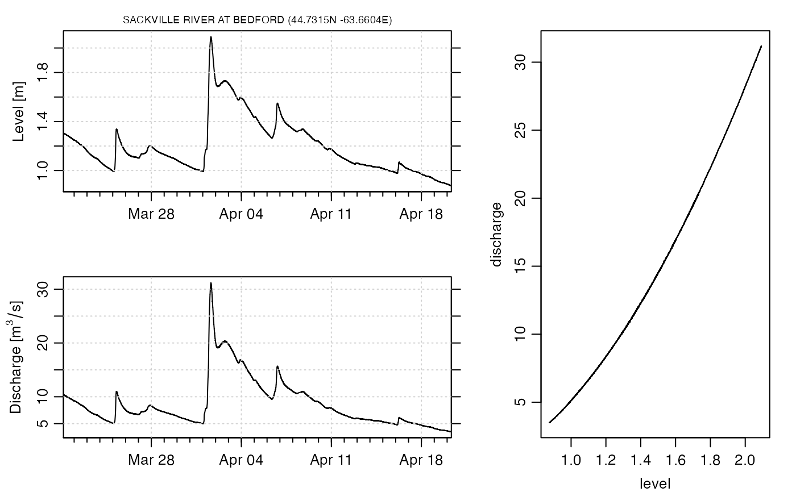

Download and read a river water-level file
Arguments
- id
character value indicating the ID of the desired station. This may be discovered by using
riverDirectory()first. This defaults to"01EJ001", for the Sackville River at Bedford.- region
character value indicating the province or territory in which the river gauge is sited. This defaults to
"NS.- interval
character value, either
"daily"or `"hourly", indicating the time interval desired. (The first seems to yield data in the current month, and the second seems to yield data since over the last 1 or 2 days.)- saveFile
logical value indicating whether to save the file for later use. This can be handy if the goal is to archive data, since the server does not seem to provide archived information. Please examine the code of this function to see how to read the file, which is a bit tricky.
- debug
integer indicating the level of debugging information that is printed during processing. The default,
debug=0, means to work quietly.
Examples
library(oce)
#> Loading required package: gsw
library(dod)
dir <- riverDirectory()
data <- riverData(id = dir$id)
oce.plot.ts(data$time, data$level,
xaxs = "i",
xlab = "", ylab = "Level [m]", lwd = 2,
drawTimeRange = FALSE, grid = TRUE
)
mtext(sprintf("%s (%.4fN %.4fE)", dir$name, dir$latitude, dir$longitude),
line = 0.2, cex = 0.7 * par("cex")
)
